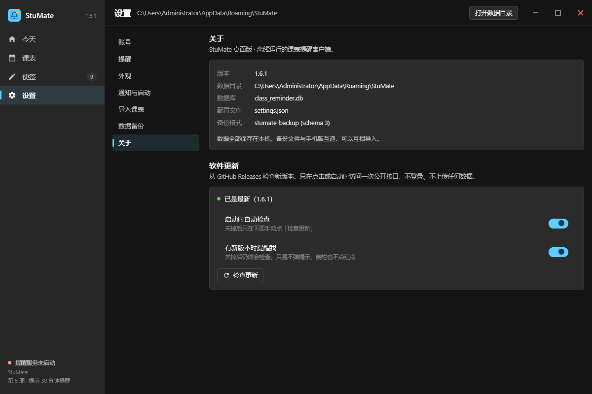
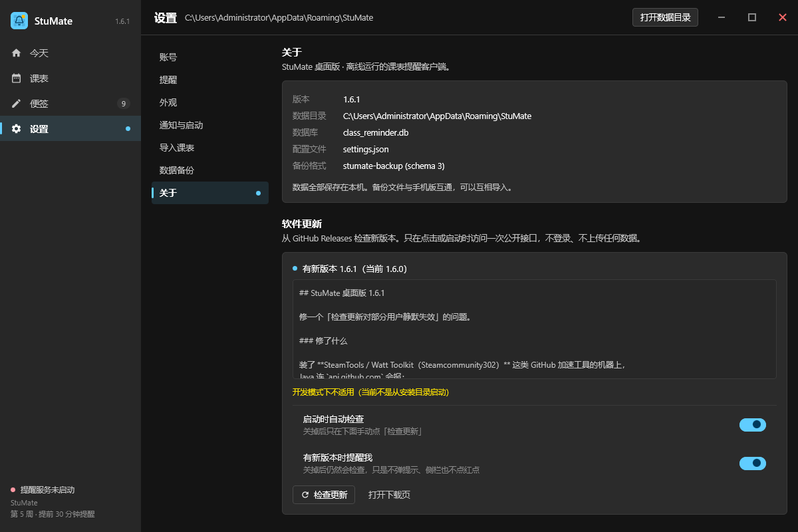
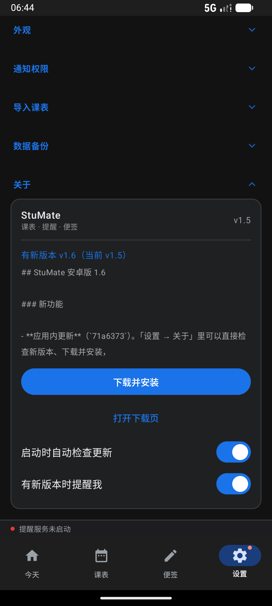
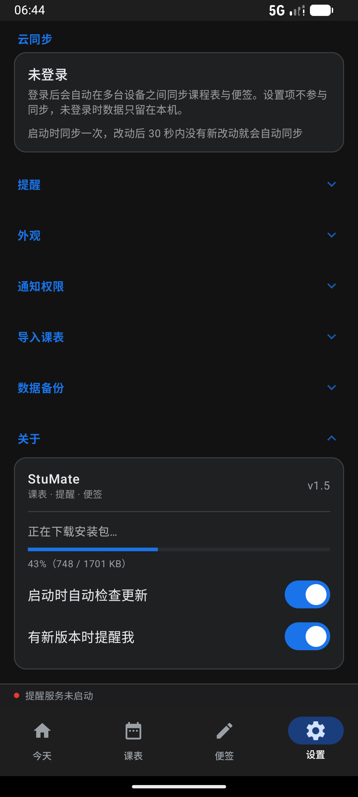
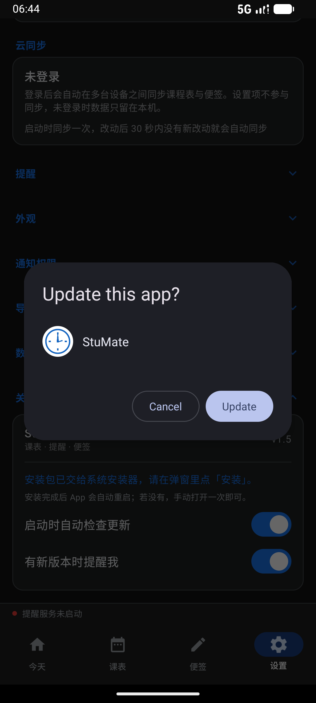
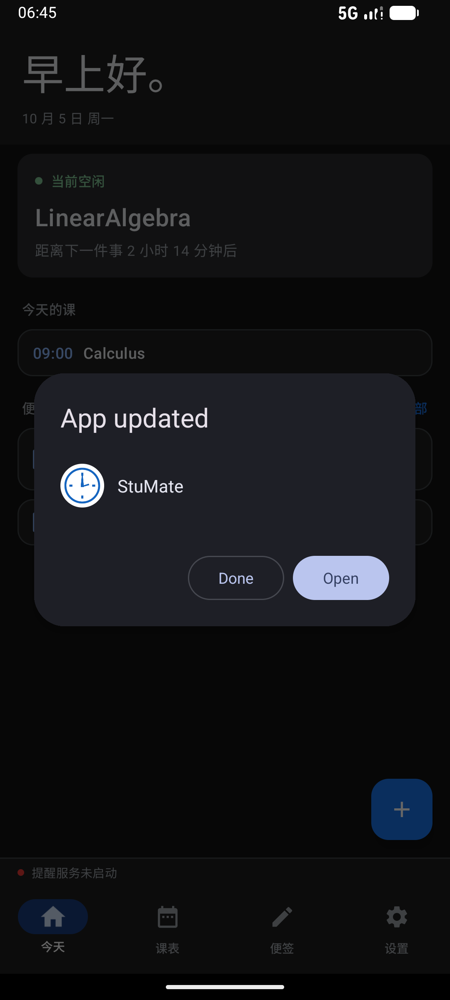
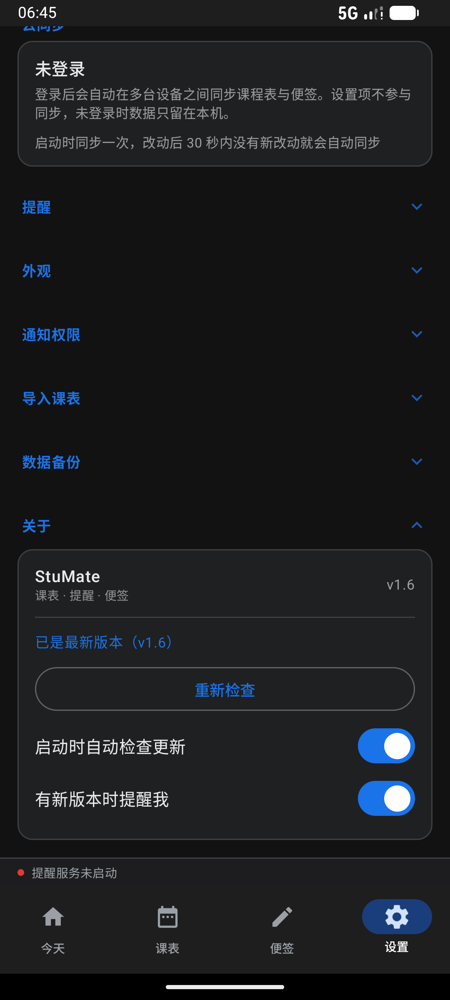

v1.0 之后追加的一轮：发布 1.6.1 把「装了 GitHub 加速工具就连不上」的修复送出去 ——
过程中发现并修掉一个更深的问题：
桌面端的「下载补丁并就地替换」这条路，跨版本根本走不通，
而原有的冒烟测试结构性地发现不了它。
v1.6.0 发布于本地 13:23，而 SSL 修复提交在 14:44，晚了 1 小时 21 分。 线上那个 1.6.0 自带的更新器仍会 PKIX 失败。
1.6.1 把修复带出去。因为老版本更新器自己更新不了自己， 老用户需要手动装一次整包 —— Release 说明里写明了。
依赖比对原先逐字比较 cfg 的 classpath 行，而 jpackage 文件名里的 hash 每次构建都不一样 → 老用户一律被判定「这个版本更新了依赖」。
改成先抹掉文件名末尾的内容 hash，再比「依赖的名字 + 版本集合」。

v1.6.1，与本地版本号相等。api.github.com —— 在装了 SteamTools 的本机上，
改之前这里是 PKIX path building failed。
-PcurrentVersion=1.6.0
把当前版本压低一档，走的是真实的比较分支。## 这类
Markdown 标记都原样显示，说明确实是从网络来的，不是本地文案）；
「开发模式下不适用（当前不是从安装目录启动）」是生产代码在开发模式下该说的话。v1.0 的冒烟把同一次构建的产物复制一份当「老安装」，两边 cfg 天然一致 ——
所以它结构性地测不出「坑 4」。这次先把
dist/StuMate-portable-1.6.0.zip 解成一份货真价实的 1.6.0 安装，
再让它去拉线上真实的 v1.6.1 补丁。
$ ./gradlew updateSmoke -Pdist=F:/DownloadQQ/stumate-160-install/StuMate ════════════════════════════════════════════════════════════════════════ StuMate 桌面端自动更新冒烟（真实 GitHub Release） 源安装目录：F:\DownloadQQ\stumate-160-install\StuMate 当前版本 ：1.6.1 ════════════════════════════════════════════════════════════════════════ ① 复制安装目录到临时区（绝不碰用户正在用的那份） 把主 jar 改名为旧版本：StuMate-Desktop-1.6.0-3c185cf5c6bbbea450cfbec6faf85f1e.jar → StuMate-Desktop-1.5.0-3c185cf5c6bbbea450cfbec6faf85f1e.jar cfg : 42 行，classpath 行 = app.classpath=$APPDIR\StuMate-Desktop-1.5.0-3c185cf5…jar ② 走真实代码：查 Release → 下载补丁 → 校验 → 就地替换 完成，用时 24894 ms ③ 断言磁盘状态 ✅ 1. app/ 下出现新的主 jar：StuMate-Desktop-1.6.1-31a7e498475027dd5a8740587a6ae7f2.jar ✅ 2. 新旧 jar 不是同一个文件 ✅ 3. cfg 的 classpath 指向新 jar ✅ 4. cfg 行数不变（42 → 42） ✅ 5. 其余依赖行原样保留 ✅ 6. 旧 cfg 备份成 StuMate.cfg.bak ✅ 7. 没留下 StuMate.cfg.new 中间文件 ✅ 8. 新 jar 大小合理（> 1 MB） ✅ 9. 新 jar 里能读到主类 ④ 产物指纹 替换前 jar：StuMate-Desktop-1.5.0-3c185cf5c6bbbea450cfbec6faf85f1e.jar 替换后 jar：StuMate-Desktop-1.5.0-…jar, StuMate-Desktop-1.6.1-…jar 新 jar sha256：28280deb4046270a5379c910e972fb59810278f21f3d12745cc03e32806dac45 ════════════════════════════════════════════════════════════════════════ 9/9 断言通过 ════════════════════════════════════════════════════════════════════════ BUILD SUCCESSFUL in 1m 13s
<名字>-<版本>-<内容hash>.jar，
而这个 hash 每次构建都不一样。元凶是
skiko-awt-runtime-windows-x64-0.7.85 这个包：它只有
293 字节（一个空壳 + 25 字节的 MANIFEST），Compose 插件每次构建都重新压一遍，
zip 里条目的时间戳跟着构建时间走 → 字节不同 → hash 不同。
实测同一个版本号 0.7.85，三次构建拿到三个不同的 hash：bfa84136b65ded4ecdfbe715e20e91a （1.6.0）841d382d82e6fdf9897ae89b773e4c9 （第一次 1.6.1）9bd9ae59e7a15e553c56eec0e260fadb （修完代码再构建）dependencyLines 原先逐字比对，于是 1.6.0 的用户装 1.6.1 时被判
「这个版本更新了依赖，需要重新安装整包」 —— 而实际一个依赖都没动。
换句话说，「应用内下载补丁并自动替换」这条路跨版本从来没成功过。-[0-9a-fA-F]{16,}\.jar$），比的是「依赖的名字 + 版本集合」——
加依赖、删依赖、升版本照样能认出来，纯粹的内容/时间戳差异不再误报。createDistributable 重建时报：Unable to delete directory … app\StuMate\StuMate.exeThis might happen because a process has files open or has its working directory set in the target directory.-r-xr-xr-x），
而 Kotlin 的 deleteRecursively() 不会清只读位，
删到那个 exe 就失败。旁证：同一批删除里，所有 jar 都被删掉了 ——
如果有进程真的在跑，classpath 上的 jar 是会被 JVM 持有的，删不掉。app/（Git Bash 的 rm -rf 会清只读位），
或者干脆换一个全新的构建目录。QueryFullProcessImageName 实测：本机跑着的实例在
F:\DownloadQQ\unpacked\StuMate\，跟几个构建目录都没关系。
安卓端这一轮没有改动，验收证据与 v1.0 相同：
起点是模拟器上真实装着的 1.4，装一个也走 release 签名、
自称 1.5 的包，让它去对真实的 v1.6 Release 走完整链路。


1,742,642 字节，与 Release 上那个资产的
size 完全一致。落点是应用私有外部目录
getExternalFilesDir(DOWNLOADS)。

FileProvider 授出 uri，用
ACTION_VIEW 交给系统。安卓不允许应用自己静默安装，终点就在这里。

dumpsys package 实测：
versionCode 7 / versionName 1.6（安装前是 6 / 1.5）。

INSTALL_FAILED_UPDATE_INCOMPATIBLE ——
那样测的就不是更新链路，而是「签名不匹配」。
| 仓库 | Release | 资产 | sha256 |
|---|---|---|---|
deeery/StuMate-Desktop |
v1.6.1 本轮新增 |
StuMate-patch-1.6.1.zip 1,905,496 BStuMate-portable-1.6.1.zip 70,358,544 B |
28e909eb…a1a88121d91a7492…9696eaf7 |
deeery/StuMate-Desktop |
v1.6.0 | StuMate-patch-1.6.0.zip 1,879,279 BStuMate-portable-1.6.0.zip 70,332,325 B |
ecd6b1dd…9d9d37d5992ac7…a16006 |
deeery/ClassReminder |
v1.6 | StuMate-1.6-release.apk 1,742,642 B |
0f25448f…af6775 |
三个 Release 都用匿名请求 /releases/latest 复核过：
桌面端现在回 tag_name: v1.6.1，资产的
digest=sha256:… 与本地算出来的一致 —— 客户端读到的就是这些真数据。
发布工具：两端各一份 tools/release.py（不共用，因为资产形态不同），
提供 pack / notes / publish 三个子命令。
归档名 StuMate-<版本>-release.apk 必须与
UpdateCenter.apkAssetName() 一致 —— 客户端是按名字找资产的。
Steamcommunity302），它对
api.github.com 做透明 TLS 中间人，根证书只装进
Windows 证书库，没进 JDK 的 cacerts。症状：PKIX path building failed。Windows-ROOT 倒进
同一个 KeyStore，再建唯一一个 TrustManagerFactory。
SSLContext.init(null, arrayOf(tmA, tmB), r) 不是「两个都试」：
JDK 内部 SSLContextImpl.chooseTrustManager() 只取数组里第一个
X509TrustManager，后面的静默丢弃。拼完照样 PKIX 失败，
现象和没改一模一样。
.preview-classpath 指着旧 class 目录build/ 和隔离目录 F:/DownloadQQ/stumate-altbuild/，
而 .preview-classpath 里存的是前者（旧的），最后一次真正编译却发生在后者。
结果截图看起来一切正常，只是新加的东西一个都不在。白跑两轮。shoot_scenarios.py 加 check_fresh() ——
classpath 里最新 .class 必须比源码里最新 .kt 还新，
不满足直接报错，不截一张假的图。
objects.githubusercontent.com 本来就不稳。retrying(times = 3)
（间隔 800 / 1600 ms），重试前把半截文件删掉再写。
坑 4（jpackage 文件名 hash 不稳定）与坑 5（launcher exe 只读） 见上面第二节的方框 —— 它们直接决定了「补丁这条路能不能走通」。
%ProgramFiles% 下需要管理员权限（写 app/ 会被拒）。
代码里已经识别 AccessDeniedException 并降级为「打开下载页」。updateSmoke 断言覆盖的。
StuMate · 桌面端 1.6.1（单测 182/182）· 安卓端 1.6 / versionCode 7（单测 167/167）
本轮验收截图 7 张（桌面 2 张为 1.6.1 重截）· 桌面替换冒烟 9/9 · 已发布 Release 3 个
上一版报告：github-auto-update-verification-v1.0.html